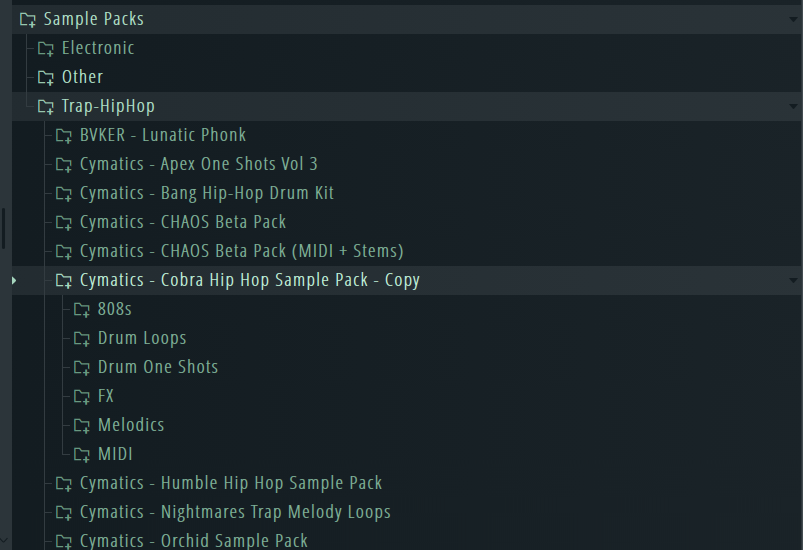
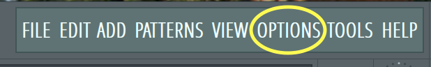
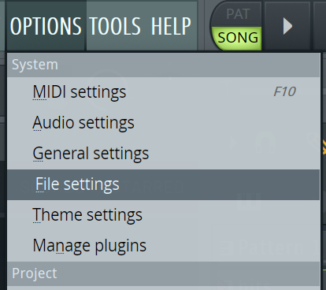
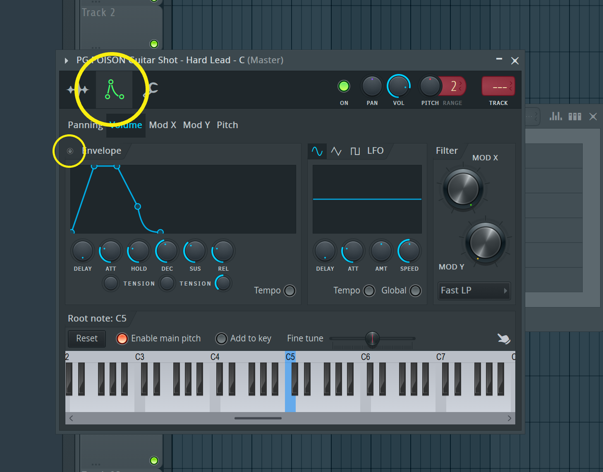
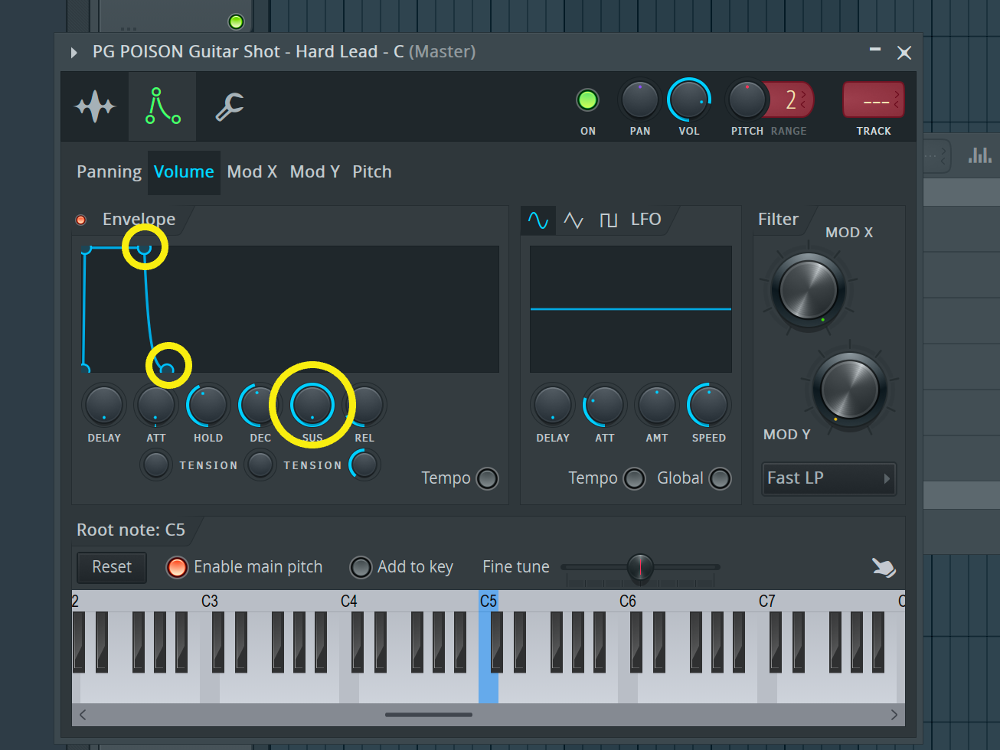
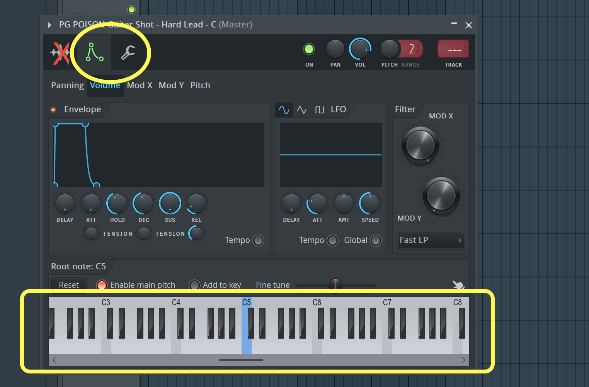
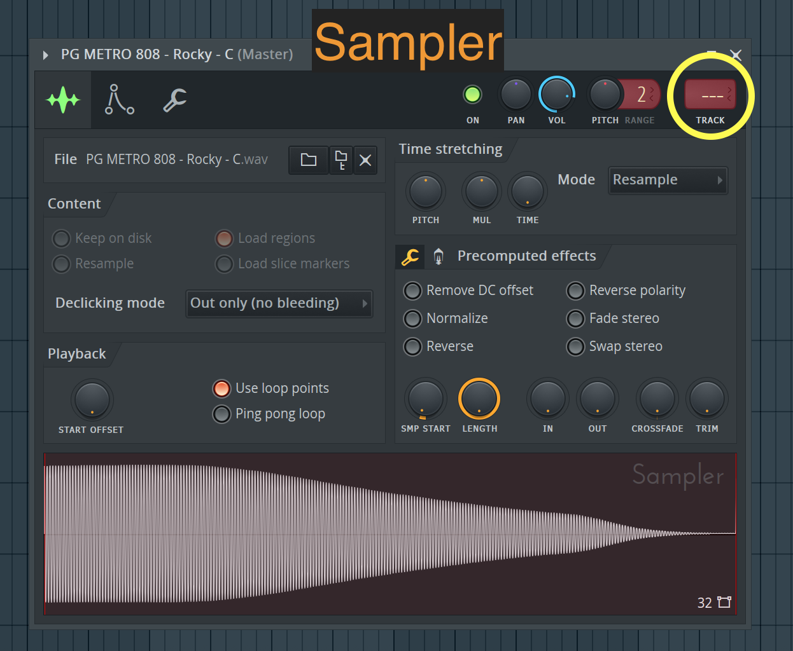
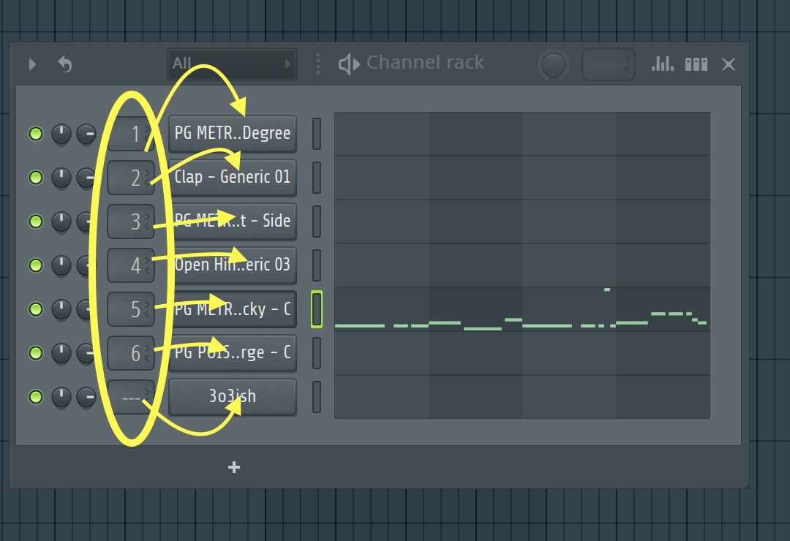
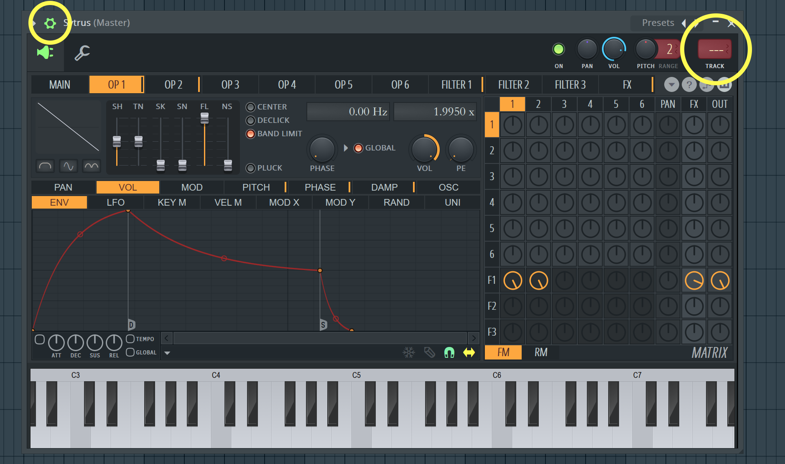

FL Studio is an extremely powerful tool for music production, but what good is a powerful tool if it's hard to understand? That question has developed after my own struggles with the intricate and complex layout of FL Studio's UI, but now after using it for around two years, I am much more familiar with the software. In this guide, I hope to help you and other producers using FL Studio, get a better understanding of how to use FL efficiently and comfortably.
Here are some tips and tricks I use when I'm in FL Studio
Using your own sample packs
In FL Studio, users have the ability to link files and folders directly into the program's interface. This is extremely useful because with this feature, all your files are easily accessible to be used at any time. You can link any compatible files you want, but for our purposes we will be linking sample pack folders. Before you connect your sample pack folders to FL Studio, it is a good idea to organize them into helpfully labled "containing folders". This can be extremely useful especially if you have a variety of sample packs for different genres. Also, using one primary folder to hold all the genre folders and subsequently the sample packs, makes linking the folder to FL Studio much more simple and straightforward
For example, this is how my sample packs are organized
Once you have finished organizing your folders, let's link them to FL Studio
-
Finding the "file settings" menu inside FL Studio
Open FL Studio, and using the navigation bar in the top left, click "Options".

In the dropdown that appears, click "File settings".

-
Routing your sample packs
Open FL Studio, and using the navigation bar in the top left, click "Options".
In the dropdown that appears, click "File settings".
Gating a sample
Samples are vital in creating music but most of the time when a sample is triggered, it plays all the way through on its own. While there are times when changing that wouldn't be neccessary, setting a short note trigger in the piano roll or channel rack and a long note being played instead, can throw off the balance of your song. There are a couple different ways to make the sample only last as long as its note, but the most reliable method I've found, is to use a volume envelope.
To access the envelopes panel for a sample, click on the sample in the channel rack and click on the second tab, the one with two lines (a straight line and a curved line) in a triangle-like shape. After navigating to the tab, click "volume" (if it isn't already selected) in the navigation bar containing panning, Mod X, Pitch, etc. Click the circular button to the left of the "Envelope" label to activate the envelope for your sample.

Now that you have activated the envelope, you should play the sample a few times to hear what changes have been made to familiarize yourself with its modifications. The main difference you should notice, is the sound ends sooner after you stop triggering it. Now, you have to hold the note down for it to keep playing. The last step is to adjust the envelope levels so the sample sounds how you want it to sound. Delay determines how soon the envelope affects the sound after the sample starts playing, attack changes how long it takes for the sound to reach its set volume, hold keeps the volume steady for a set time, decay determines how long it takes for the volume to reach the sustain level, sustain is the volume level that decay fades to, and release sets how long the sound keeps playing after a key (like piano key) is released. For the majority of my samples, I set the attack to a tiny sliver to prevent a potential popping sound, hold doesn't really matter for my purposes and neither does decay, but I turn the sustain all the way up, and I set the release differently depending on the sample.

Setting a sample's root note
So you have your sample packs ready to use in FL Studio and that's great, but be careful. Although most samples should work exactly how you want them to, some online sample packs (ones found on the internet) have incorrectly labled samples. For example: a sample might have "Cmin" in its name, but when you use it in the piano roll and click the C key, it doesn't sound like a C or sound like the key of Cmin at all. This naming error may be pretty frustrating and annoying at first, but the fix is actually really easy. All you need to do is identify what note/key the sample is actually playing at, and put it as the root note in FL Studio's sampler.
open the sample by clicking on it in the channel rack, and then click on either the two-line triangle or the wrench (both of these tabs have the item you will use). at the bottom of either tab, you should see a regular keyboard that has a single note colored blue. The blue note is what FL Studio thinks is the "root" note of your samples. If you set the blue note to the correct pitch of your sample, pressing the note that normally plays "C" on a piano will play your sample at the pitch of C. To correct your sample's preset root note, simply right-click on the correct keyboard note. Please keep in mind, the default root is C5, not C4 or C3 or anything else. You should set your root note within that range to keep octaves consistent. Additionally, if your root note is not set to the note of your sample, the keyboard in the piano roll or any other method you can use to play your sample, will be very weird and the notes will not match with your other instruments. That is why fixing the root note is extremely important

Grid snapping
Placing notes in the piano roll or patterns in the playlist can be really frustrating when it comes to alignment, but luckily there is a super simple way to consistently align items how you want. Grid snapping incrementally restricts how much you can move a note or pattern, and it allows you to be very precise with tempo sync/timing. To enable or adjust grid snapping, all you need to do is find and click the magnet icon in whatever you are using (piano roll, playlist, edison, etc) then in the dropdown that appears, select the increment you wish to use.
Setting a sample's mixing channel
The mixer plays a huge role in music production, as it controls all the levels (volume for example) for every sound involved in your songs. In order to adjust every sound, you need to route every sound to the mixer first. Luckily, this is simple.
In a sample's window or in the window for an instrument, towards the top there should be a rectangular box with either a number or three dashes (---). Keep in mind, this box is accessed differently on different window types. The box is particularly hidden in instrument windows, where you have to click the gear in the top left for it to even appear. Now, to send the element's sound to a mixer channel, simply click and drag on the box until the number reads what you want it to. Once you have set the element to a mixer channel, the mixer insert with that same number will be able to adjust the sound as desired.
Channel selection using the sampler
Channel selection using the channel rack
Channel selection using an instrument (plugin)